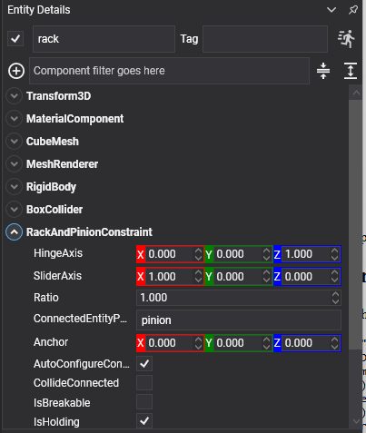

Rack and Pinion Constraint
A rack and pinion constraint turns rotation into straight-line movement: a turning pinion drives a sliding rack along its axis. Steering columns, sliding gates, screw jacks, a lift driven by a winch drum.
It is the gear constraint's cousin: one couples two rotations, this one couples a rotation to a translation.
This constraint had no equivalent in the previous API.
It only couples the two motions
Like a gear, this constraint says nothing about where either body is. The pinion needs its own hinge to hold it on its axle, and the rack needs its own slider to hold it on its rails. The rack and pinion constraint only ties their two motions together.
That makes it four components across two entities.
RackAndPinionConstraint Component

The constraint goes on the pinion, and names the rack as its connected entity.
// The rack: a slider to keep it on its rails, and nothing else.
Entity rack = new Entity("rack")
.AddComponent(new Transform3D() { Position = new Vector3(0f, 1.6f, 0f) })
.AddComponent(new RigidBody())
.AddComponent(new BoxCollider() { Size = new Vector3(2.5f, 0.25f, 0.4f) })
.AddComponent(new SliderConstraint()
{
Axis = Vector3.UnitX,
NormalAxis = Vector3.UnitY,
MinDistance = -1.5f,
MaxDistance = 1.5f,
});
// The pinion: a hinge to hold it, a motor to turn it, and the constraint that drives the rack.
Entity pinion = new Entity("pinion")
.AddComponent(new Transform3D() { Position = new Vector3(0f, 2f, 0f) })
.AddComponent(new RigidBody())
.AddComponent(new CylinderCollider() { Radius = 0.3f, Height = 0.2f })
.AddComponent(new HingeConstraint()
{
Axis = Vector3.UnitZ,
NormalAxis = Vector3.UnitX,
MotorMode = MotorMode.Velocity,
TargetAngularVelocity = 1.5f,
MaxMotorTorque = 400f,
})
.AddComponent(new RackAndPinionConstraint()
{
ConnectedEntityPath = "rack",
HingeAxis = Vector3.UnitZ,
SliderAxis = Vector3.UnitX,
Ratio = 1f,
});
this.Managers.EntityManager.Add(rack);
this.Managers.EntityManager.Add(pinion);
Properties
| Property | Default | Description |
|---|---|---|
| HingeAxis | 0,0,1 | The pinion's rotation axis, in this body's local space. This body is the pinion. It must match the axis of its own hinge. |
| SliderAxis | 1,0,0 | The direction the rack travels along, in the connected body's local space. It must match the axis of the rack's own slider. |
| Ratio | 1 | How many radians the pinion turns for each metre the rack travels. |
Plus the common properties.
Choosing the Ratio
For real teeth to mesh, one full turn of the pinion moves the rack by its circumference, so the ratio follows from the pinion's radius:
// 2π radians per 2πr metres, which is 1/r radians per metre.
rackAndPinion.Ratio = 1f / pinionRadius;
Raise it above that and the rack moves less per turn: a slower, stronger drive. Lower it and the rack moves further per turn.
Steering is the everyday case: a steering wheel that turns two and a half times lock to lock, driving a rack that travels fifteen centimetres each way.
Important
The component goes on the pinion, not on the rack, and ConnectedEntityPath names the rack. That is also why HingeAxis is read in this entity's space and SliderAxis in the connected one's. Getting them the wrong way round leaves the constraint trying to slide the pinion and turn the rack.
Tip
Turn on RenderManager.DebugLines with PhysicsDebugFlags.Constraints while wiring one up. The four axes (the slider's, the hinge's, and this constraint's two) all have to agree, and seeing them drawn is much quicker than working out which of the four is wrong. See Debug Rendering.